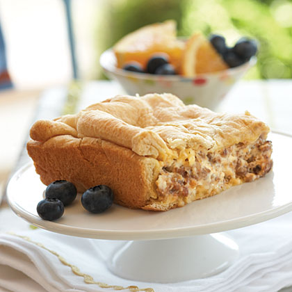

Breakfast Casserole

A delicious start to your day!
This casserole has been a favorite since elementary school. Creamy cream
cheese mixed with breakfast sausage snuggled in between crescent rolls,
what more could you ask for?
Ingredients
- cooking spray
- 1 pound ground breakfast sausage
- 1 (8 ounce) package cream cheese, softened
- 1 (8 ounce) tube refrigerated crescent rolls
Steps
- Spray a 8x8-inch baking dish with cooking spray and preheat oven to
350 degrees F (175 degrees C).
- Press half of dough the tube of crescent rolls into baking
dish, being sure to cover bottom and part of the way up sides of dish;
press seams together. Pour sausage mixture over top; set aside. Roll
remaining crescent roll dough into a 8"x8" rectangle; layer over sausage
mixture
- Bake, uncovered, at 350 degrees for 15 to 20 minutes or until golden; cut into squares to serve.
Recipe Source
Return to main page